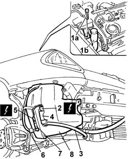

5050A10 Windscreen washer fluid RESERVOIR (in engine compartment) R.R.
- Path
- Procedures > 50 auxiliary units > 5050 screen washers and headlamp wash/wipe > 5050A SCREEN WASHER AND HEADLAMP WASHER RESERVOIR > 5050A10 Windscreen washer fluid RESERVOIR (in engine compartment) R.R.
- Kind
- repair procedure (removal / refitting; the operation number is the code)
- Applies to
- all engines; all production periods
- Interactive page
- https://sloeber94.github.io/elrnDB-lThss/en/#/79264
Applies to: all engines; all production periods
 Removing
Removing
 Refitting
Refitting- Position the vehicle on a lift.
See in Op. 7055B54 PROTECTION/GUARD under engine - R.R.
See in Op. 4450B04 Right FRONT WHEEL (one) - R.R.
See in Op. 7055B42 FRONT WHEEL ARCH LINER (one), left or right - R.R.
- < R1 > (right side)
See in Op. 7055B64 Engine compartment DUST SEAL in front wheel arch (one), left or right - R.R.
- < R1 > (right side)
See in Op. 7210E10 FRONT BUMPER
- Lower the vehicle.
1. Undo the upper bolt (1a) fixing the windscreen washer fluid reservoir (1b).
- Raise the vehicle.
2. Disconnect the electrical connection for the headlamp washer pump.
3. Disconnect the water pipe.
4. Remove the headlamp washer pump from its seat on the reservoir.
5. Disconnect the electrical connection for the windscreen washer pump.
6. Disconnect the water pipe.
7. Remove the windscreen washer pump from its seat on the reservoir.
8. Undo the fixing bolts and remove the windscreen washer and headlamp washer fluid reservoir from the lower part.

Applies to: all engines; all production periods
Refitting
Removing- Fit the windscreen and headlamp washer fluid reservoir through the lower part.
- Tighten the bolts fixing the reservoir to the bracket.
- Fit the windscreen washer pump in place.
- Connect the rapid pipe connector.
- Connect the electrical connection.
- Fit the headlamp washer pump in place.
- Connect the rapid pipe connector.
- Connect the electrical connection.
- Lower the vehicle.
- Tighten the upper bolt fixing the windscreen washer fluid reservoir.
See in Op. 7210E10 FRONT BUMPER
See in Op. 7055B64 Engine compartment DUST SEAL in front wheel arch (one), left or right - R.R.
- < R1 > (right side)
See in Op. 7055B42 FRONT WHEEL ARCH LINER (one), left or right - R.R.
- < R1 > (right side)
See in Op. 4450B04 Right FRONT WHEEL (one) - R.R.
See in Op. 7055B54 PROTECTION/GUARD under engine - R.R.
- Remove the vehicle from the lift.
Topics linked from this page (5)
- 4450B04 Right FRONT WHEEL (one) - R.R.
- 7055B42 FRONT WHEEL ARCH LINER (one), left or right - R.R.
- 7055B54 PROTECTION/GUARD under engine - R.R.
- 7055B64 Engine compartment DUST SEAL in front wheel arch (one), left or right - R.R.
- 7210E10 FRONT BUMPER